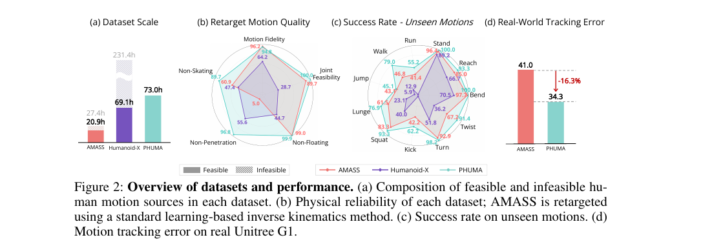
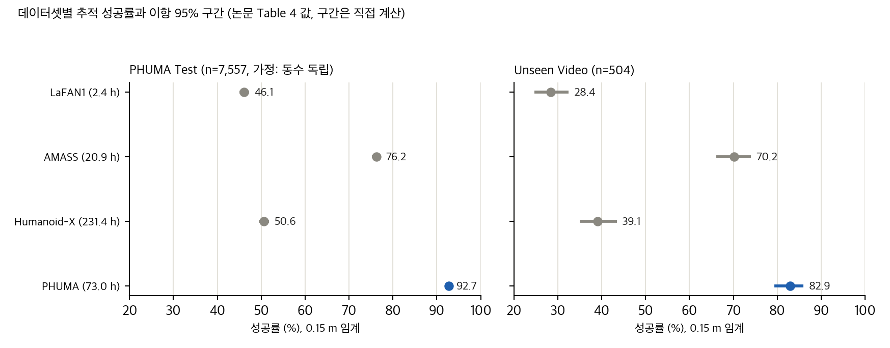
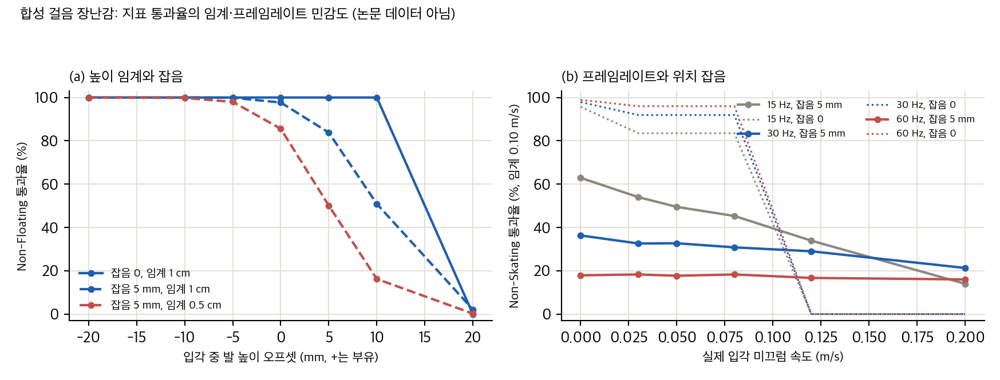
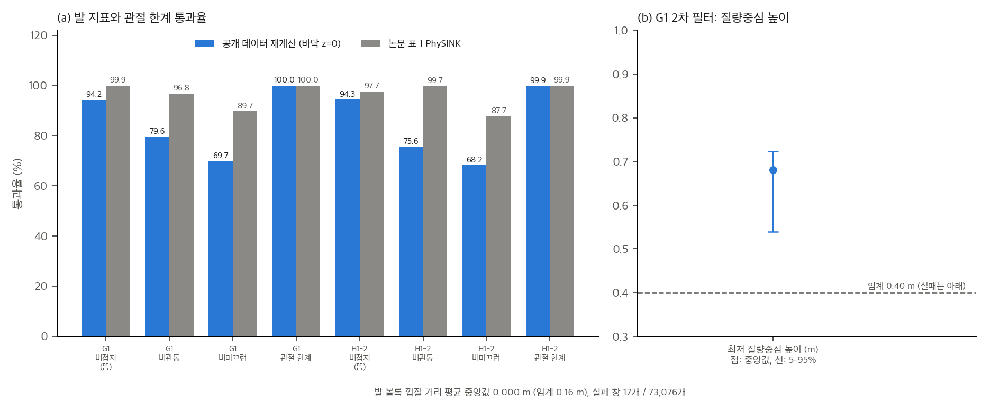

분석 대상은 arXiv v3(2026-10-12 제출 판)입니다. 원문은 paper/paper.pdf(35쪽, 13.9 MB)와 paper/paper.txt(pdftotext)입니다. 식·표 번호는 v3 기준입니다.
| 항목 | 내용 |
|---|---|
| 제목 (v3) | PHUMA: Physically Reliable Humanoid Locomotion Dataset |
| 제목 (v1) | PHUMA: Physically-Grounded Humanoid Locomotion Dataset (22쪽, 2025-10-30 제출) |
| 학회 | CoRL 2026 Spotlight. 원문 머리글 "10th Conference on Robot Learning (CoRL 2026), Austin TX, USA", 프로젝트 페이지와 GitHub README도 같은 표기 |
| 저자 | Kyungmin Lee, Sibeen Kim (동등 기여), Youngdo Lee, Minho Park, Hyunseung Kim, Dongyoon Hwang, Donghu Kim, Hojoon Lee (교신), Jaegul Choo (교신) |
| 분야 | cs.RO (휴머노이드 모션 데이터, 리타게팅, 모션 추적 RL) |
| 논문 라이선스 | CC BY 4.0 (arXiv abs 페이지 license 표시). 원문 PDF 본문에는 충돌하는 저작권 고지가 없음 (pdftotext로 ©, copyright, license 검색) |
| 데이터 라이선스 | HF 데이터셋 카드 license: apache-2.0. 다만 LAFAN1과 LocoMuJoCo는 "라이선스 제약"으로 제외했고, train/test의 원본 사람 포즈는 "라이선스 문제"로 공개하지 않음. 원천(AMASS, Motion-X 등) 약관은 이 분석에서 확인하지 않음 (02 §4, 04 D19) |
| 코드 라이선스 | GitHub davian-robotics/PHUMA: Apache-2.0 (스타 253, 마지막 push 2026-09-30) |
| 버전 차이 | v1 → v3: 제목, 주요 실험 구성, 실물 실험 추가. 자세한 내용은 §7 |
Humanoid-X처럼 영상에서 복원한 사람 동작은 떠 있음, 관통, 미끄럼, 관절 한계 위반이 많습니다. PHUMA는 (1) 물리 기준으로 클립을 거르고(§3.1), (2) 관절 한계, 접지, 미끄럼 억제 항을 넣은 리타게팅 PhySINK(§3.2)로 옮겨, 73.0시간의 G1·H1-2 모션을 만들었습니다. 이 데이터로 학습한 정책이 AMASS와 Humanoid-X보다 시뮬 추적 성공률이 높고, 실물 G1에서 AMASS 학습 정책보다 MPJPE가 16.3% 낮다고 보고합니다.
| 지표 | 기준 | 비고 (A.1.3) |
|---|---|---|
| 루트 저크 | < 50 m/s³ | 분포의 94백분위 근처 |
| 발 접촉 점수 | > 0.6 | |
| 골반 높이 | 0.6 m < h < 1.5 m | 최대 높이는 99백분위 근처 |
| 골반 대 BoS 거리 | < 6 cm | 평균 거리 |
| 척추1 대 BoS 거리 | < 11 cm | 평균 거리 |
04 D21).SINK(형상 적응 IK)에 물리 항 세 개를 더한 목적함수입니다(식 10).
03 §5).
논문 Figure 2 (원 저자): (a) 데이터 규모, (b) 리타게팅 품질, (c) 미본 모션 성공률, (d) 실물 추적 오차. © 원저자 (Lee 외, arXiv:2510.26236), CC BY 4.0. 원문 https://arxiv.org/abs/2510.26236 에서 잘라 옮김. 그림 아래 원 캡션을 그대로 포함.
| 방법 | 충실도 | 관절 feasibility | 비접지 | 비관통 | 비미끄럼 |
|---|---|---|---|---|---|
| IK | 27.6 | 91.7 | 55.6 | 47.8 | 59.7 |
| GMR | 56.3 | 81.8 | 14.7 | 100.0 | 67.7 |
| SINK | 94.8 | 95.9 | 96.4 | 14.9 | 55.4 |
| + 관절 항 | 94.9 | 100.0 | 96.4 | 14.8 | 55.6 |
| + 접지 항 | 94.9 | 100.0 | 99.9 | 97.2 | 53.6 |
| PhySINK | 94.8 | 100.0 | 99.9 | 96.8 | 89.7 |
03 §3, 04 D11).| 변형 | 시간 | 총 성공률 (PHUMA Test) | 총 성공률 (Unseen) |
|---|---|---|---|
| Humanoid-X 원본 | 231 h | 50.6 | 39.1 |
| 저크만 | 141 h | 83.0 | 77.6 |
| 발 접촉만 | 123 h | 82.9 | 78.2 |
| 높이만 | 136 h | 80.6 | 74.0 |
| BoS만 | 110 h | 81.3 | 74.8 |
| 전체 | 62 h | 87.0 | 79.6 |
03 §1, 04 D21).| 리타게팅 | PHUMA Test 총합 | Unseen 총합 |
|---|---|---|
| IK | 52.8 | 54.6 |
| GMR | 61.7 | 59.3 |
| SINK | 76.2 | 70.2 |
| PhySINK | 79.5 | 72.8 |
03 §2). 이 차이를 근거로 "우위"라고 말하기는 어렵습니다.| 데이터셋 | 시간 | PHUMA Test | Unseen | 0.5 m 기준 (표 20, 21) Unseen |
|---|---|---|---|---|
| LaFAN1 | 2.4 h | 46.1 | 28.4 | 78.2 |
| AMASS (SINK) | 20.9 h | 76.2 | 78.2 (v3 표 4) / 70.2 (표 3, 21, v1) | 92.3 |
| Humanoid-X | 231.4 h | 50.6 | 39.1 | 84.1 |
| PHUMA | 73.0 h | 92.7 | 82.9 | 93.7 |
03 §1). 이 값에 따라 PHUMA 대 AMASS 유의성이 p ≈ 0.06(78.2)과 p < 0.001(70.2)로 달라집니다.| 지표 | AMASS | PHUMA | 감소율 |
|---|---|---|---|
| E_MPJPE 총합 (mm) | 41.0 | 34.3 | 16.3% |
| E_dof 속도 (deg/frame) | 3.20 | 2.69 | 15.9% |
| E_dof 가속도 (deg/frame²) | 1.50 | 1.29 | 14.0% |
03 §2).03 §1).04 D16).04 D14).04 D18).04 D19).| 항목 | v1 (2025-10-30, 22쪽) | v3 (2026-10-12, 35쪽) |
|---|---|---|
| 제목 | Physically-Grounded | Physically Reliable |
| 방법 이름 | PhySINK (Physically-grounded shape-adaptive IK) | PhySINK (Physics-aware shape-adaptive IK) |
| 그림 2(d) | 경로 추종 성공률 | 실물 G1 추적 오차 |
| 실물 실험 | 없음 | G1 실물, BeyondMimic, 24개 모션 |
| 경로 추종 | 본문 표 5 | 부록 F, 표 36 |
| 하드웨어 | G1, H1-2 (IsaacGym) | G1 실물 추가, IsaacSim 학습 |
| AMASS Unseen 총합 | 70.2 (표 4) | 78.2 (표 4), 70.2 (표 3, 21) |
| 데이터 구성 | 표 1 (총 73.0 h) | 표 8, 표 2와 부록 E에 큐레이션 세부 추가 |
| 0.15 m 임계 근거 | 본문 짧은 언급 | 부록 D.2 전용 분석 |
| 시드 | 명시 없음 | 부록 D.4, E.2에 3시드 추가 |
이 문서의 §1–§7은 논문에 실린 수치만 씁니다. 공개 데이터셋은 2026-11-12에 내려받아 끝의 "추가 검증 (2026-11-12): 공개 데이터로 지표 재계산" 절에서 따로 계산했습니다. 계산은 analysis/table_check.py(결과 table_check_results.json)와 analysis/sensitivity_toy.py(결과 sensitivity_toy_results.json)로 다시 돌릴 수 있습니다. 둘 다 numpy와 scipy만 씁니다.
| 검사 | 계산 | 결과 |
|---|---|---|
| 표 4 대 표 21 (0.15 m, G1) | 네 데이터셋의 PHUMA Test와 Unseen | 일치, 단 AMASS Unseen 78.2 ≠ 70.2 |
| 표 3 SINK 대 표 21 AMASS | Unseen 총합 | 70.2로 일치. 표 4만 다름 |
| 표 4 AMASS Unseen 카테고리 단순 평균 | (90.7+75.0+62.7+44.1)/4 | 68.1. 총합은 카테고리 가중 평균이라 직접 검산 불가. 70.2에 가까움 |
| 실물 감소율 (표 5) | (41.0−34.3)/41.0 | 16.3% (본문과 일치) |
| 실물 속도·가속도 감소 | 3.20→2.69, 1.50→1.29 | 15.9%, 14.0% |
| 표 5 카테고리 단순 평균 | AMASS 41.02, PHUMA 34.32 | 총합과 일치 |
| 표 8 합계 | 클립 합 76.03K, 시간 합 72.97 h, 영상 44.78 h, mocap 28.19 h | 본문 76.0K, 73.0 h와 일치 |
| 분할 개수 | train 67,953, test 7,557, unseen 504, 합 76,014 | 본문 "76.0K", "약 7.5K (10%)" 일치. test는 전체의 9.9% |
| Humanoid-X 필터 후 비율 | 62.2/231.4, 62.2/237.2 | 26.9%, 26.2%. 본문 27.1%와 0.2%p 차이 |
| Humanoid-X 피드셔블 시간 | 표 2 "전체 62 h", 그림 2(a) "69.1 h", 표 31 원본 "237.2 h", 표 4 원본 "231.4 h" | 네 값이 서로 다름 (04 D21) |
| H1-2 값 (표 38, 39, 21b) | 표 38 SINK 54.4, 64.3 = 표 39 AMASS 54.4, 64.3. 표 39 Humanoid-X Unseen 60.5 = 표 21(b). 표 39 PHUMA Unseen 78.6 = 표 21(b) | 일치 |
| 낙상률 비 (표 27) | 18.6/5.7 = 3.3, 13.1/4.2 = 3.1 | 본문 "약 3배"와 일치 |
| 표 2 대 표 31 (필터 단계별 시간) | 141, 123, 136, 110, 62 시간 (표 31은 141.1, 123.1, 135.7, 110.3, 62.2) | 일치 |

직접 계산: 논문 표 4 값(0.15 m)과 이항 95% 구간(Wilson). 구간은 독립 베르누이 가정이며 시드 변동은 포함하지 않음.
| 비교 | 차이 (%p) | z | p (양측) | 판정 |
|---|---|---|---|---|
| T3 PhySINK 대 SINK, PHUMA Test (n = 7,557) | 3.3 | 4.88 | 1.0×10⁻⁶ | 유의 |
| T3 PhySINK 대 SINK, Unseen (n = 504) | 2.6 | 0.91 | 0.36 | 유의하지 않음 |
| T3 PhySINK 대 GMR, Unseen (n = 504) | 13.5 | 4.53 | 6×10⁻⁶ | 유의 |
| T9 PhySINK 대 GMR, Unseen (n = 504) | 6.5 | 2.51 | 0.012 | 유의 (표 9는 학습 데이터가 PHUMA 원천) |
| T4 PHUMA 대 AMASS, Test (n = 7,557) | 16.5 | 27.99 | ≈ 0 | 유의 |
| T4 PHUMA 대 AMASS, Unseen, 표 4 값 78.2 | 4.7 | 1.88 | 0.059 | 경계 |
| T4 PHUMA 대 AMASS, Unseen, 표 3·21 값 70.2 | 12.7 | 4.76 | 2×10⁻⁶ | 유의 |
| T21 PHUMA 대 AMASS, 0.5 m, Unseen | 1.4 | 0.87 | 0.38 | 유의하지 않음 |
| T20 PHUMA 대 AMASS, 0.5 m, Test | 6.9 | 17.39 | ≈ 0 | 유의 |
| 비교 | 평균 차 | t | p | 비고 |
|---|---|---|---|---|
| T25 PhySINK 대 SINK, PHUMA Test (GMR 입력, 0.5 m) | 1.8 | 11.0 | 0.0004 | |
| T25 PhySINK 대 SINK, Unseen (GMR 입력, 0.5 m) | 3.9 | 9.4 | 0.0014 | |
| T30 영상 33% 추가 대 mocap만, Unseen | −5.9 | −12.4 | 0.004 | 비단조 (큰 하락) |
| T30 영상 100% 추가 대 mocap만, Unseen | 4.2 | 7.9 | 0.012 | |
| T32 발 접촉 필터 제거 대 전체, Unseen | −10.2 | −17.2 | 0.0003 | |
| T35 접지 항 제거 대 PhySINK, Unseen | −5.7 | −8.2 | 0.0013 | |
| T35 미끄럼 항 제거 대 PhySINK, PHUMA Test | −0.4 | −4.9 | 0.008 | 통계적으로 유의하지만 0.4%p |
| T35 미끄럼 항 제거 대 PhySINK, Unseen | −2.0 | −2.9 | 0.046 |
src/utils/smpl.py, preprocess_smplx.py)는 같은 식을 씁니다(04 D4).find_robust_ground: 프레임마다 발가락 최소 높이와 뒤꿈치 최소 높이 + 5 mm의 평균을 만들고, 그 값들의 창 폭 5 cm(δ의 두 배) 최빈 중앙값을 씁니다. 꼭짓점 단위가 아니라 프레임 단위 대표값을 세므로 식 (11)과 같지 않습니다(04 D2).04 D3).calculate_bos_distance). 임계는 평균 6 cm, 11 cm.np.clip(dof_pos, 0.98·min, 0.98·max)를 실행합니다(motion_adaptation.py). 저장된 모션의 위치는 항상 98% 한계 안에 있습니다.04 D11).analysis/sensitivity_toy.py)합성 걸음 궤적(주기 0.8 s, 스윙 높이 8 cm, 보폭 30 cm, 8초). 접촉 라벨은 생성기의 입각 구간을 그대로 씁니다(이상화). 잡음은 각 축에 독립 정규분포를 더합니다. 논문 데이터가 아니므로 숫자 자체보다 민감도를 봅니다.

직접 계산(장난감): 합성 걸음 궤적에서 높이 임계 오프셋(a)과 미끄럼 임계·프레임레이트·잡음(b). 논문 데이터가 아님.
| 입각 오프셋 | 잡음 0, 임계 1 cm (NF / NP) | 잡음 5 mm, 임계 1 cm (NF / NP) | 잡음 5 mm, 임계 0.5 cm (NF / NP) |
|---|---|---|---|
| −2.0 cm (관통) | 100 / 0 | 100 / 2.5 | 100 / 0 |
| −1.0 cm | 100 / 100 | 100 / 50.2 | 99.8 / 15.8 |
| 0 (정확히 붙음) | 100 / 100 | 97.7 / 97.9 | 85.6 / 83.1 |
| +1.0 cm (부유) | 100 / 100 | 50.9 / 100 | 16.2 / 99.8 |
| +2.0 cm | 0 / 100 | 2.1 / 100 | 0.2 / 100 |
| 프레임레이트 | 잡음 0: 정지 / 0.12 m/s / 0.20 m/s 통과율 | 잡음 5 mm: 정지 / 0.12 m/s / 0.20 m/s 통과율 |
|---|---|---|
| 15 Hz | 95.7 / 0.0 / 0.0 | 62.9 / 33.9 / 14.0 |
| 30 Hz | 97.9 / 0.0 / 0.0 | 36.3 / 29.0 / 21.3 |
| 60 Hz | 98.9 / 0.0 / 0.0 | 17.9 / 16.7 / 16.0 |
| 프레임레이트 | σ 2 mm | σ 5 mm | σ 10 mm |
|---|---|---|---|
| 15 Hz | 1.8% | 34.6% | 63.7% |
| 30 Hz | 23.9% | 63.7% | 81.4% |
| 60 Hz | 55.6% | 81.4% | 90.6% |
| 시나리오 (정적 자세, 240프레임) | 접촉 점수 S | 0.6 기준 |
|---|---|---|
| 두 발 모두 붙음 | 1.000 | 통과 |
| 왼발 붙음, 오른발 6 cm 떠 있음 | 1.000 | 통과 |
| 두 발 모두 5 cm 떠 있음 | 0.000 | 실패 |
| 오른발 2 cm 관통 | 1.000 | 통과 |
04 D21).data.zip 3,416,370,206 바이트(3.42 GB). 처음에는 승인 기준(1 GB 미만)을 넘어 받지 않았고, 2026-11-12 승인 후 내려받았습니다(추가 검증 절).| ID | 주장 (논문) | 위치 | 판정 | 근거 |
|---|---|---|---|---|
| C1 | 73.0 h, 76.0K 클립, AMASS의 3.5배 | §1, §3.1, 표 8 | 일치 (73.0/20.9 = 3.49) | §1 |
| C2 | 필터 후 Humanoid-X 27.1% 남음 | 부록 E.2.1 | 대체로 일치 (26.9%) | §5.1 |
| C3 | PhySINK는 다섯 지표 모두에서 일관되게 좋음 | §3.2, 표 1 | 부분 (비관통은 GMR 100%, 충실도는 SINK와 같음) | 표 1 |
| C4 | PhySINK 관절 feasibility 100% | 표 1 | 구현에 의존 (저장 시 클리핑) | §3.6 |
| C5 | PhySINK가 Unseen에서 SINK보다 좋음 | 표 3 | 통계 불충분 (z = 0.9, p = 0.36) | §2.2 |
| C6 | PHUMA가 모든 설정에서 AMASS·Humanoid-X보다 좋음 | 표 4 | 데이터셋 차이는 유의. Unseen의 AMASS 값 오류 (78.2 대 70.2) | §1, §2.2 |
| C7 | 0.15 m 임계가 0.5 m보다 차이를 잘 드러냄 | 부록 D.2 | 임계 선택 후 주장. 사전 등록 없음 | 표 20, 21 |
| C8 | 실물 MPJPE 16.3% 감소 | §4.5, 표 5 | 일치 (수치), 유의성 미확인 (분산 없음) | §2.4 |
| C9 | 영상 기반 PHUMA 데이터가 mocap 기반보다 좋음 | 표 29 | 단일 시드, Unseen 차이 3.2%p (검정 안 됨) | 표 29 |
| C10 | 데이터 품질이 양보다 중요하다 (Humanoid-X 231 h < PHUMA 73 h) | §4.4 | 방향은 일관. 다만 리타게팅 방식·학습 예산이 섞임 | 02 §5 |
| C11 | 영상 데이터를 더하면 성능이 오른다 | 표 30 | 비단조 (33%에서 하락) | 표 30 |
| C12 | 떨어짐 비율: Humanoid-X가 AMASS의 약 3배 | 표 27 | 일치 (3.1–3.3배) | §1 |
| C13 | 경로 추종에서 PHUMA가 우위 | 표 36 | 단일 시드 (검정 안 됨) | 부록 F |
| C14 | 실물 정책 추적 우위 | 표 5 | 모션 24개, 시드 미기재 | §2.4 |
data.zip 하나(3.42 GB)뿐입니다. 처음에는 승인 기준 1 GB 미만에 맞지 않아 받지 않았고, 2026-11-12 승인 후 내려받아 추가 검증 절에서 계산했습니다.data/split/*.txt(파일 목록)만 있고, README 예시 example/kick.npy는 저장소에 포함되어 있지 않습니다.§7에서 미뤘던 데이터 검증을 이 절에서 했습니다. data.zip 전체를 내려받아 공개 G1·H1-2 모션의 물리 지표를 CPU에서 계산했습니다. 계산은 analysis/extra_public_data_metrics.py로 하며, 결과는 집계값만 analysis/extra_public_data_metrics_results.json에 저장합니다. 모션 원자료는 저장하지 않았습니다. 압축 구조는 analysis/extra_zip_inventory.py(결과 analysis/extra_zip_inventory_results.json)로 확인했습니다. 그림은 analysis/extra_public_data_plots.py로 만들었습니다.
| 항목 | 값 |
|---|---|
| 파일 | Hugging Face DAVIAN-Robotics/PHUMA의 data.zip |
| 크기 | 3,416,370,206 바이트 (3.42 GB) |
| sha256 | 7bd38634f1ec075af907a2bce10616b083a5414885674ce6630664124e22e495 (응답 헤더 x-linked-etag와 일치) |
| 저장소 커밋 | 48b0f5982969104ab041461e594a8b8c36db8ba5 (응답 헤더 x-repo-commit) |
| 내려받은 날 | 2026-11-12 (응답 헤더 날짜) |
| 압축 구조 | 멤버 147,149개. data/g1/<출처>/*.npy 73,076개, data/h1_2/<출처>/*.npy 73,076개, 디렉터리 997개. 출처 폴더는 로봇마다 15개이며 humanml 21,731, fitness 19,655, idea400 9,939 순으로 많습니다. 압축 해제 합계 4.29 GB |
| 파일 형식 | 클립마다 root_trans(N×3), root_ori(N×4, xyzw), dof_pos(N×D), fps(모두 30). 피클로 감싼 numpy 객체라 제한된 피클 로더로만 읽었고, 모든 파일을 오류 없이 읽었습니다 |
| 열 수 | G1 29열 중 손목 6열은 모든 클립에서 0이어서 제거하고 23관절로 씀. H1-2는 27열 |
| 길이 | 로봇 하나당 7,529,058 프레임 = 69.7 h (30 fps). 클립 중앙값 120 프레임(4 s) |
논문의 73.0 h와 76.0K 클립은 로봇 하나 기준으로 보는 것이 자연스럽습니다. 그러면 공개본은 클립 수가 약 4% 적고 시간이 약 4.5% 적습니다. 두 로봇의 합으로 쓴 것이라면 차이는 2배입니다. 본문에는 어느 쪽인지 없습니다.
논문은 다섯 지표를 "프레임 비율"로만 정의하고, 저장소에는 표 1 계산 코드가 없습니다(04 D14). 아래 명세는 이 분석에서 실제로 쓴 것입니다. 논문 정의와 다른 부분은 오른쪽 열에 표시했습니다.
| 항목 | 이 분석의 명세 | 논문 본문 | 차이와 비고 |
|---|---|---|---|
| 순운동학 | 저장소의 정적 MJCF(repo/asset/humanoid_model/<로봇>/scene.xml)와 MuJoCo 순운동학 |
없음 | 로봇 모델 값은 저장소 파일 그대로 |
| 발 영역 | 발목 롤 링크의 충돌 기하 표면 점을 키포인트 x 중점으로 뒤꿈치·발끝 두 영역으로 나눔. 좌우 합쳐 4영역 | 4영역(LH, LT, RH, RT), 영역당 꼭짓점 22개 | 점 집합이 같지 않음 |
| 영역 높이 H | 영역 안 점들의 최저 z | 발 높이 | 같은 의미 |
| 영역 위치 | 영역 안 점들의 수평 평균 | 명시 없음 | 최저점 위치를 쓰면 속도 결과가 달라질 수 있음 |
| 바닥 높이 g | 주값 g = 0 (데이터 바닥). 대안으로 클립마다 최빈 높이를 쓰되 창 폭 2.5 cm, 4N개 값 기준 | 식 (11) | 주값이 데이터 바닥과 맞는지는 아래 3절에서 봄 |
| 접촉 | H ≤ 2.5 cm (주값). 5 cm, 10 cm도 계산 | "접촉 중" (정의 없음) | 결과를 크게 좌우함 |
| 분모 | 접촉 중인 영역-프레임 수 (영역 4개 × 프레임 중 접촉한 것) | "프레임 비율" | 프레임 단위인지 영역 단위인지 논문에 없음 |
| 비접지 | 접촉이면서 H > 1 cm이면 실패 | 접촉 중 발이 1 cm 이내로 떠 있음 | 같음 |
| 비관통 | 접촉이면서 H < −1 cm이면 실패 | 접촉 중 발이 1 cm 이내로 뚫지 않음 | 같음 |
| 비미끄럼 | 접촉이면서 영역 수평 위치의 속도 ≥ 0.10 m/s이면 실패. 속도는 4초 창 안의 중앙차분 | 접촉 중 수평 발 속도 < 10 cm/s | 창 경계는 편측 차분. 접촉 경계 프레임 처리 없음 |
| 관절 feasibility | 프레임에서 위치가 [0.98 min, 0.98 max] 안이고 |q̇| ≤ 0.98 × 속도 한계(config.yaml) |
위치·속도 98% 안 | 프레임 단위. 두 조건을 모두 만족해야 통과 |
| 충실도 | 계산하지 않음. 공개 데이터에 사람 기준 모션이 없음 | 관절 위치 오차 < 10 cm, 방향 < 10° | 미계산 |
| 2차 필터 (G1만) | 저장소 큐레이션과 같은 창(120프레임, 겹침 15, 최소 30). 창의 최저 질량중심 높이 < 0.40 m 또는 창 평균 BoS 거리 > 0.16 m이면 실패 | 논문에 없음 (04 D7) |
H1-2(0.6 m, 0.24 m)는 계산하지 않음 |
지표 통과율은 (접촉 영역-프레임 − 실패) ÷ 접촉 영역-프레임입니다. 전수 계산이므로 난수 시드의 영향은 없습니다(시드 20261112는 표본 옵션에만 쓰였고 이번 실행에서는 쓰지 않았습니다).
| 지표 | G1 재계산 | G1 논문 (PhySINK, 표 1) | 차이 (%p) | H1-2 재계산 | H1-2 논문 (PhySINK, 표 37) | 차이 (%p) |
|---|---|---|---|---|---|---|
| 비접지 | 94.2 | 99.9 | −5.7 | 94.3 | 97.7 | −3.4 |
| 비관통 | 79.6 | 96.8 | −17.2 | 75.6 | 99.7 | −24.1 |
| 비미끄럼 | 69.7 | 89.7 | −20.0 | 68.2 | 87.7 | −19.5 |
| 관절 feasibility | 100.0 | 100.0 | 0.0 | 99.9 | 99.9 | 0.0 |
| 충실도 | 계산 안 함 | 94.8 | — | 계산 안 함 | 93.9 | — |
관절 feasibility 값만 논문과 맞습니다. 나머지 세 발 지표는 모두 논문보다 낮습니다. 로봇별 클립 중앙값은 G1 기준 비접지 95.2%, 비관통 83.4%, 비미끄럼 71.5%, H1-2 기준 95.1%, 80.7%, 68.0%입니다.
접촉 판정과 바닥 기준에 따른 민감도 (통과율, %)
| 설정 | G1 비접지 | G1 비관통 | G1 비미끄럼 | H1-2 비접지 | H1-2 비관통 | H1-2 비미끄럼 |
|---|---|---|---|---|---|---|
| 주값 (접촉 2.5 cm, 바닥 z = 0) | 94.2 | 79.6 | 69.7 | 94.3 | 75.6 | 68.2 |
| 접촉 5 cm | 89.5 | 80.6 | 67.4 | 89.3 | 76.9 | 65.9 |
| 접촉 10 cm | 84.5 | 81.7 | 64.8 | 83.9 | 78.3 | 63.1 |
| 클립별 최빈 바닥 (접촉 2.5 cm) | 74.9 | 70.3 | 69.1 | 77.2 | 68.5 | 67.8 |
해석은 다음과 같습니다.
motion_adaptation.py 391행)이 같은 98% 한계를 씁니다. 그래서 G1의 100%는 정의상 거의 보장됩니다. H1-2에서는 7,228개 클립(9.9%)에 위치 한계를 넘는 프레임이 있습니다. 원인은 확인하지 못했습니다. 클리핑이 쓰는 한계(motion_adaptation.py의 retarget.robot.joints_range, 로봇 래퍼 쪽에서 옴. 이 분석에서는 읽지 않음)가 이 분석의 MJCF 한계와 다를 가능성이 있습니다.결론: 공개 G1 데이터의 PhySINK 지표는 논문 표 1 값으로 재현되지 않았습니다. 관절 한계만 맞습니다. 이 명세의 접촉 판정, 분모, 바닥 기준이 논문과 가장 다를 가능성이 큽니다. 논문에는 이 세 가지의 정의가 없어서 불일치의 원인을 특정하지 못했습니다. 이 결과는 "이 명세에서의 값"으로만 읽어야 합니다.
| 항목 | 값 |
|---|---|
| 검사한 창 | 73,076개 (클립 하나가 창 하나. 프레임 7,529,058) |
| 질량중심 높이 < 0.40 m인 창 | 17개 (0.023%), 1,806프레임 |
| BoS 거리 > 0.16 m인 창 | 0개 |
| 최저 질량중심 높이 (창별) | 5% 0.539 m, 중앙값 0.681 m, 95% 0.723 m |
| 창 평균 BoS 거리 (창별) | 중앙값 0 m (질량중심이 발 볼록 껍질 안), 95% 0.019 m |
| 창 번호가 빈 곳 | 원본 시퀀스 36,068개 중 4,598개에서 빈 번호 6,118개 |
| 인접 창 15프레임 겹침이 정확히 같은 쌍 | 0 / 36,239 |

직접 계산(공개 데이터, CPU). (a) 주값 명세의 통과율(파란색)과 논문 표 1(G1)·표 37(H1-2) PhySINK 값(회색). 관절 한계만 맞습니다. (b) G1 창별 최저 질량중심 높이의 5–95% 범위와 중앙값, 0.40 m 임계. 임계 아래 창은 17개입니다. 논문 원 그림이 아닙니다. 논문 값은 표 1과 표 37에서 옮겼습니다.
data.zip)는 phuma/data/zip/에 두었고, 이 저장소에는 포함되지 않습니다(.gitignore). 다시 받으려면 curl -L -o phuma/data/zip/data.zip https://huggingface.co/datasets/DAVIAN-Robotics/PHUMA/resolve/main/data.zip 을 실행하고 sha256을 대조합니다.정적 읽기만 했습니다. 저장소는 phuma/repo/에 얕게 복제했습니다(HEAD 2faf15b, 2026-09-30). 스크립트는 실행하지 않았고, 패키지도 설치하지 않았습니다. 판단 근거는 파일과 줄 번호로 씁니다. 코드를 실행하지 않았으므로 "버그"는 정적 판단이며 실행으로 확인하지 않았습니다.
| 파일 | 역할 | 논문 대응 |
|---|---|---|
src/curation/preprocess_smplx.py |
단일 파일 큐레이션 (SMPL-X 입력) | §3.1, 표 7 |
src/curation/preprocess_smplx_folder.py |
폴더 큐레이션 | §3.1, 표 7 |
src/curation/preprocess_g1_folder.py, preprocess_h1_2_folder.py |
로봇 공간 추가 필터 (다운로드 파이프라인이 실행) | 논문에 없음 (D7) |
src/utils/smpl.py |
저역통과, 접지 추정, 접촉 비율, BoS 거리 | §3.1, 부록 A.1 |
src/retarget/shape_adaptation.py |
형상 적응 (β와 링크 스케일) | §3.2, 부록 B.1 |
src/retarget/motion_adaptation.py (_multiprocess는 동일 손실 로직) |
PhySINK 모션 최적화, 저장 | §3.2, 식 1–10 |
README.md, download_phuma.sh, requirements.txt |
실행 순서, 환경, FAQ | 재현 절차 |
읽지 않은 것: visualize.py, robot.py(로봇 키네마틱스 래퍼), setup_humanoid.py(997줄, 새 로봇 설정 도구), motionx_npz_to_npy.py, lafan_csv_to_npy.py, locomujoco_npz_to_npy.py. 손실 계산과 큐레이션에 직접 관여하지 않습니다.
판정: 일치, 부분(의미는 같으나 세부가 다름), 불일치(다른 식이나 다른 값), 누락(논문 또는 코드에 없음), 결함(정적으로 실행 오류가 보임).
| ID | 대상 | 논문 | 코드 | 판정 |
|---|---|---|---|---|
| D1 | 큐레이션 임계 (표 7) | 저크 50, 접촉 0.6, 골반 0.6–1.5 m, BoS 6/11 cm | preprocess_smplx.py 인자 기본값 동일 (--root_jerk_threshold 50, --foot_contact_threshold 0.6 등) |
일치 |
| D2 | 접지 높이 (식 11) | 모든 프레임·발 꼭짓점, 창 δ = 2.5 cm, 꼭짓점 수 최대 | find_robust_ground (smpl.py 40행): 프레임별 발가락 최소와 뒤꿈치 최소 + 5 mm의 평균을 만들고, 창 폭 5 cm 안 프레임 수를 셈 |
불일치 (단위가 꼭짓점이 아니라 프레임 대표값, 창 폭 2배) |
| D3 | 접촉 비율 c (그림 7, 부록 A.1.2) | 발 영역당 꼭짓점 22개, 접지 근처 비율 | get_foot_contact (smpl.py 66행): 접지 띠 ±2.5 cm 안 개수 / 22. 뒤꿈치는 +5 mm 보정(heel_offset) |
부분 (5 mm 보정은 논문에 없음) |
| D4 | 접촉 점수 (식 12) | 프레임 평균 max(c^LH, c^LT, c^RH, c^RT) | preprocess_smplx.py 92행: np.max(chunk_data[:, 69:73], axis=-1).mean() |
일치. 단 max 구조가 맹점 (장난감 E4, 03 §4.4) |
| D5 | BoS 거리 | 골반·척추1의 수평 투영 대 발·발목 볼록 껍질, 임계 6 cm·11 cm. 본문은 "CoM" 표현 | calculate_bos_distance (smpl.py 118행): 관절 0(골반)과 3(척추1) 투영, 관절 7·8·10·11의 볼록 껍질, 프레임 평균 |
부분 (관절 위치를 씀, CoM 아님. 평균이라 한 프레임 이탈은 묻힘) |
| D6 | 저역통과 (부록 A.1.1) | 30 Hz, 4차 영위상, 루트 3 Hz, 방향·자세 6 Hz | low_pass_filter (smpl.py 14행): 4차 Butterworth, filtfilt, 루트 3 Hz, 방향은 쿼터니언에서 6 Hz, 자세는 축-각 벡터에서 6 Hz |
일치 (자세 필터 공간은 본문에 없음, 사소함) |
| D7 | 로봇 공간 추가 필터 | 논문에 없음 | preprocess_g1_folder.py (기본값): 질량중심 최소 높이 0.4 m, 질량중심 대 BoS 0.16 m. H1-2 (preprocess_h1_2_folder.py): 0.6 m, 0.24 m. 다운로드 스크립트가 이 필터를 실행 |
누락 (논문 표 7과 별개의 2차 필터. 공개 데이터가 이 필터를 거친 결과인지 확인 필요) (2026-11-12 추가) 공개 G1 데이터에서 질량중심 높이 필터 실패 창은 17개(0.023%), BoS 실패는 0개입니다. 공개본이 이 필터를 거쳤는지는 확인하지 못했습니다(03 추가 검증 §4). |
| D8 | 단일 파일 큐레이션 호출 | — | preprocess_smplx.py 62행: get_foot_contact(vertices, foot_contact_vertex_indices, robust_ground_y). 함수 정의(smpl.py 66행)는 ground_threshold를 기본값 없는 필수 인자로 받음 → 실행 시 위치 인자 부족 오류가 날 것으로 보임 |
결함 (정적 판단. 폴더 버전 preprocess_smplx_folder.py 74행은 네 번째 인자를 넘김) |
| D9 | 모션 충실도 (식 1–4) | 전역 위치 L1, 뼈 위치 제곱 + 방향 (1 − cos), 2차 차분 평활 L1 | motion_adaptation.py: 키포인트 L1 (가중치 0인 키포인트 2개 제외, 골반과 몸통으로 추정), 뼈 MSE + (1 − cos), 평활 L1. 링크 스케일 12개를 학습 (link_scales, 뼈에 곱함) |
부분. 링크 스케일은 본문 3.2절에 없음 |
| D10 | 관절 feasibility (식 5–7) | 98% 한계 밖 선형 벌점, 속도 항 포함 | motion_adaptation.py: 위치 hinge를 2로 나누고 평균, 속도 hinge는 |
q̇ |
| D11 | 관절 feasibility 측정과 저장 | 표 1: PhySINK 100.0% | motion_adaptation.py 저장 직전: np.clip(dof_pos, 0.98·min, 0.98·max). 저장 값은 항상 한계 안. 위반률 출력(print)은 클리핑 전 값 |
구현 의존. 표 1 값이 클리핑 후인지 전인지 논문에 없음 |
| D12 | 접지 손실 (식 8) | Σ c_it p_it(z)² | loss_ground_z = foot_height**2 × c, 평균 |
부분 (합 대신 평균, 가중치로 보정) |
| D13 | 미끄럼 손실 (식 9) | Σ c_it ‖ṗ_it(x,y)‖² (제곱) | loss_skating_abs = torch.norm(...) (노름, 제곱 아님), 발마다 접촉 프레임 수로 나눔 |
불일치 (노름이며 제곱이 아님, 정규화 다름). 가중치 0.002 |
| D14 | 표 1 지표 (충실도 10 cm·10°, 비접지·비관통 1 cm, 비미끄럼 10 cm/s, 관절 98%) | 프레임 비율(%) | 지표 계산 코드가 없음. 실행 중 출력은 다른 정의: 접촉 마스크 contact == max(contact)(전체 배열 최댓값과 같은 프레임만), 발 높이 절댓값 평균, 미끄럼 마스크 높이 < 2.5 mm, 관절 위반은 위치만, 속도 한계 없음 |
누락. 표 1 수치를 저장소로 재현할 수 없음 (2026-11-12 추가) 명세를 정해 공개 데이터로 계산했습니다. 주값 명세의 G1 비접지 94.2, 비관통 79.6, 비미끄럼 69.7은 논문 표 1과 맞지 않고, 관절 한계만 맞습니다(03 추가 검증 §3). |
| D15 | 형상 적응 (부록 B.1) | β를 T자세에 맞춤 | shape_adaptation.py: β 10개(±5 클램프), 뼈별 링크 스케일 학습, 접지 손실 = (평균 높이)² (식 8 아님), 기본 가중치: 키포인트 2, 운동학 1, 대칭 1 |
부분 (접지 손실 형태와 스케일 학습이 본문과 다름) |
| D16 | 손실 가중치 w (식 4, 10) | 기호만, 값 없음 | 기본값: 전역 0.1, 국소 2.0, 평활 0.05, 관절 1000, 접지 10, 미끄럼 0.002, 링크 대칭 0.001 | 누락 (논문에 값이 없어 재현하려면 저장소 기본값을 써야 함) |
| D17 | 실행 장치 | 3090 GPU (표 10) | --device 기본값 cuda:0. 다중 GPU 실행 스크립트 |
GPU 가정. 맥 실행은 --device mps를 명시해야 하며 지원 여부 미검증 |
| D18 | 정책 학습·평가 | MaskedMimic, BeyondMimic, KungfuBot, 성공률 | 학습·평가 코드 없음. README: MaskedMimic는 ProtoMotions 저장소 사용. 성공률 계산 코드 없음 | 누락 |
| D19 | 데이터 접근 | 데이터셋 공개 | HF data.zip 3.42 GB (G1, H1-2). 학습·테스트 원본 사람 포즈 비공개(라이선스). Unseen Video SMPL "곧 공개". SMPL-X 모델은 웹 등록 필요(README). LAFAN1·LocoMuJoCo는 다운로드 스크립트로 받음 |
접근 제약 (02 §4) |
| D20 | 출력 형식 | — | root_trans(N×3), root_ori(N×4, xyzw), dof_pos(N×DoF), fps. G1 폴더 전처리가 손목 DoF 3개를 0으로 채움 |
확인됨 (README와 일치) |
| D21 | 보고 수치 간 불일치 | 표 2, 그림 2(a), 표 31, 표 4 (Humanoid-X 시간); 표 4 (AMASS Unseen) | Humanoid-X 원본 시간 231.4 / 237.2 h, 피드셔블 69.1 h, 필터 후 62 h. 표 8에 Humanoid-X 행 없음, 본문은 Humanoid-X 필터링이라고 씀 | 불일치 (03 §1, §5.1). 표 4 AMASS Unseen 78.2 ≠ 70.2 |
| D22 | 임계 조정 안내 | 기본값은 점프 보존을 위해 튜닝됨 | README FAQ: 기본 0.6, 예시는 0.8로 올림. "일부 미세 관통·떠 있음 잔존 허용" | 일치 (자기 인정, 값은 사용자 조정) |
| 목표 | 판정 | 이유 |
|---|---|---|
| 공식 파이프라인 전체 재생성 (원천 → 큐레이션 → PhySINK → 73 h 데이터) | 불가 | (a) SMPL-X 모델은 웹 등록이 필요해 승인 범위 밖. (b) 학습·테스트 원본 사람 포즈와 Unseen SMPL 비공개. (c) 리타게팅 단일 GPU 약 99일(03 §5.2), 기본 장치 CUDA. (d) 정책 학습은 IsaacGym/IsaacSim과 CUDA가 필요해 이 맥에서 실행 불가 |
| 공개 데이터 사용 (다운로드, 로드, 정책 학습 입력) | 다운로드·로드 완료, 학습은 불가 | 2026-11-12 승인 후 data.zip(3.42 GB)을 받아 CPU로 읽음(03 추가 검증). 원천 약관 확인은 여전히 필요 (02 §4). 학습은 GPU 필요 |
| 공개 로봇 모션으로 지표 재계산 (접지, 관통, 관절, 미끄럼; 표 1 재현에 가까운 것) | 완료 (CPU, 2026-11-12) | MuJoCo FK로 G1·H1-2 전 클립을 계산(로봇당 15–18분). 표 1 정의가 부족해 명세를 정해 계산했고, 발 지표 세 개는 표 1과 맞지 않음 (03 추가 검증, D14) |
| 큐레이션 임계 재구현 (표 7, numpy) | 중간 난이도, 입력 필요 | 임계와 계산식은 numpy로 짧음. 실제 사람 입력은 SMPL-X 관절이 필요해 등록 승인 없이는 실제 데이터로 검증 불가. 합성 입력으로 식 단위 검증은 가능 |
| PhySINK 손실 재구현 (torch, 짧은 클립) | 부분 가능 (맥 MPS 미검증) | 손실 식은 D9–D13 기준으로 쓸 수 있음. 입력(사람 SMPL-X)이 없으면 실제 클립 검증 불가. MPS에서 pytorch_kinematics 배치 FK가 동작하는지 확인 필요 |
| 정책 학습 재현 (MaskedMimic 또는 BeyondMimic) | 불가 | CUDA와 Isaac 계열 시뮬이 필요. 코드 미공개 (D18). MuJoCo로 대체하면 논문과 다른 실험 |
| 실물 G1 재현 | 불가 | 하드웨어 없음. GPU 학습 필요 |
torch==2.6.0, mujoco==3.3.0, numpy==1.26.4, Python 3.9입니다. 이 분석의 실행 환경은 torch 2.15.0, mujoco 4.0.0입니다. 저장소 요구 버전은 설치하지 않았습니다. 2026-11-12 공개 데이터 재계산은 기존 환경(mujoco 4.0.0)과 직접 짠 스크립트로 했습니다.--device mps로 바꿔야 하며, pytorch_kinematics 배치 FK와 torch.diff 계열 연산의 MPS 지원은 확인하지 않았습니다.이 맥에서 공식 파이프라인을 그대로 돌려 논문 표를 재현하는 것은 불가능합니다. 실제로 할 수 있는 것은 (1) 공개 로봇 모션의 물리 지표를 CPU로 재계산하는 것, (2) 큐레이션 식과 PhySINK 손실을 numpy·torch로 옮겨 장난감 입력에서 검증하는 것입니다. 둘 다 데이터 다운로드(3.42 GB) 승인이 필요하고, 두 번째 작업은 SMPL-X 등록 없이는 실제 사람 데이터로 검증할 수 없습니다.
motion_adaptation_multiprocess.py와 motion_adaptation.py의 손실 계산 차이. grep으로 미끄럼 항과 가중치 기본값만 대조했고, 두 파일의 전체 diff는 하지 않았습니다.robot.py)의 관절 한계 값과 발 키포인트 설정.데이터 출처 계보
리타게팅 계보
추적 정책 계보
PHUMA의 차별점(논문 자체 주장)
| 대조 대상 | 논문에서 어떻게 쓰는가 | 비고 |
|---|---|---|
| LaFAN1 (2.4 h) | 표 4 데이터셋 비교, 리타게팅 완료본 그대로 사용 | 리타게팅 방법이 PHUMA와 다름 |
| AMASS (20.9 h) | SINK로 리타게팅한 뒤 비교 (표 3, 4), PhySINK 적용본도 비교(D.4) | 같은 리타게팅 방법(SINK)에서 비교 |
| Humanoid-X (231.4 h) | 완료본을 그대로 씀 (§4.4) | 리타게팅과 큐레이션이 Humanoid-X 쪽 방법이라 PHUMA와 혼합됨 |
| IK, GMR, SINK | 리타게팅 비교 (표 1, 3, 9, 25) | |
| SPIDER | 초기값 실험 (부록 B.3) | 샘플링 최적화는 재현하지 않음 |
| KungfuBot | 다른 알고리즘에서 데이터 효과 확인 (부록 D.3) | Isaac Gym |
| MuJoCo | 교차 시뮬 평가 (표 24) |
빼 놓은 것
| 폴더 | 대상 (arXiv) | PHUMA와 맞닿는 지점 | 차이 |
|---|---|---|---|
warp_retargeting/ |
WARP, 전신 리타게팅 (2606.29940, CoRL 2026 표기) | 리타게팅 품질 지표가 정책 성능의 근거로 쓰이는 구조. 두 논문 모두 "리타게팅 품질 → 정책"을 주장 | WARP는 사람 상체 시연과 로봇 시연(DexMimicGen, GR1)을 씀. PHUMA는 전신 보행과 사람 모캡·영상 |
ultra_humanoid/ |
ULTRA, 휴머노이드 loco-manipulation (2603.03279) | 관통·접촉 지표와 증강 데이터 효과를 같은 표에서 비교하는 문제. ULTRA도 OmniRetarget 대비 데이터 차이를 섞음 | 상호작용(물체) 중심. PHUMA는 평지 보행 |
reasoning_retargeting/ |
Retargeting Through Reasoning (블로그, 2026-11-06, 논문 아님) | 리타게팅 품질을 MuJoCo 피드백으로 재는 점 | 블로그, 물체 상호작용, LLM 에이전트 루프. 공개 코드는 확인하지 않음 |
gnr/ |
GNR, 생성형 신경 리타게팅 (2610.12440) | 리타게팅 해의 다중성과 정책 학습. PHUMA는 해를 하나로 두고(SINK 계열), GNR은 생성 모델로 받음 | 손 리타게팅(DG-5F), 샘플링 MPC + flow matching |
cross_embodiment_wm/ |
Scaling Cross-Embodiment WM (2511.01177, IROS 2026) | 서로 다른 몸체 사이 간극 흡수 | 손 전용, 파티클 세계모델 |
motion_latent_action/ |
Motion-Focused Latent Action (2606.18955, IROS 2026) | 사람 영상을 로봇 학습에 쓰는 방법. PHUMA는 영상을 기하로 옮기고, 이 연구는 잠재 행동으로 옮김 | 사람 egovideo, 마스크 파이프라인 |
정리. PHUMA를 이 저장소의 다른 리타게팅 분석과 비교하면, 공통된 질문은 "리타게팅 품질 지표를 정책 성능과 어떻게 연결할 것인가"입니다. WARP, ULTRA, GNR은 같은 질문에 다른 답을 냈고, 각 논문의 평가 설계 차이가 결과 해석을 좌우합니다. PHUMA만의 특징은 보행 범위와 데이터 양 대 품질 실험입니다.
| 항목 | 확인 결과 | 확인 방법 |
|---|---|---|
| arXiv 논문 | 2510.26236, v3 2026-10-12 제출, v1 2025-10-30 제출, 라이선스 CC BY 4.0 | arXiv abs 페이지 |
| 학회 | CoRL 2026 Spotlight (프로젝트 페이지, GitHub README, 원문 머리글 일치) | 프로젝트 페이지 HTML, PDF 1쪽 |
| 프로젝트 페이지 | https://davian-robotics.github.io/PHUMA/ (paper/project_page.html 저장) |
curl |
| 코드 저장소 | github.com/davian-robotics/PHUMA, 라이선스 Apache-2.0, 스타 253, 마지막 push 2026-09-30, 기본 브랜치 main | GitHub API (/repos/...) |
| 분석에 쓴 코드 | 얕은 복제 HEAD 2faf15b (2026-09-30), phuma/repo/ (gitignore) |
git clone --depth 1 |
| 저장소 파일 | src/curation 5개 + 공통 유틸, src/retarget 3개(motion_adaptation.py, _multiprocess.py, shape_adaptation.py), asset/ 로봇 모델, data/split/*.txt(분할 목록), 정책 학습 코드 없음 |
파일 목록 |
| HF 데이터셋 | DAVIAN-Robotics/PHUMA, gated: false, private: false, 카드 license: apache-2.0 |
HF API (/api/datasets/...) |
| HF 데이터 파일 | data.zip 3,416,370,206 바이트 (3.42 GB), README, .gitattributes, .gitignore |
HF API 목록, resolve/main/data.zip HEAD 요청 (본문 다운로드 안 함) |
| 분할 개수 | train 67,953, test 7,557, unseen_video 504 (합계 76,014) | data/split/*.txt 줄 수 |
| 공개 범위 | HF에는 G1, H1-2 리타게팅 결과. LAFAN1·LocoMuJoCo 제외(라이선스). 학습·테스트 원본 사람 포즈 비공개(라이선스). Unseen Video의 SMPL 파일은 "곧 공개" | HF README, GitHub FAQ |
| 외부 파이프라인 | ProtoMotions(NVlabs)에 PHUMA 데이터 지원 추가(2025.12 소식). 이 분석에서는 확인하지 않음 | GitHub README 소식란 |
판단. 코드는 Apache-2.0이라 분석과 재사용에 문제가 없습니다. 데이터는 Apache-2.0을 표시하지만, 원천(AMASS, Motion-X, IDEA400 등)과 제외 사유를 보면 원천 약관이 함께 적용될 수 있습니다. 이 분석에서는 원천 약관을 확인하지 않았으므로 데이터 사용 전에 원천별 약관을 따로 확인해야 합니다. 게시본에는 데이터를 넣지 않았습니다.